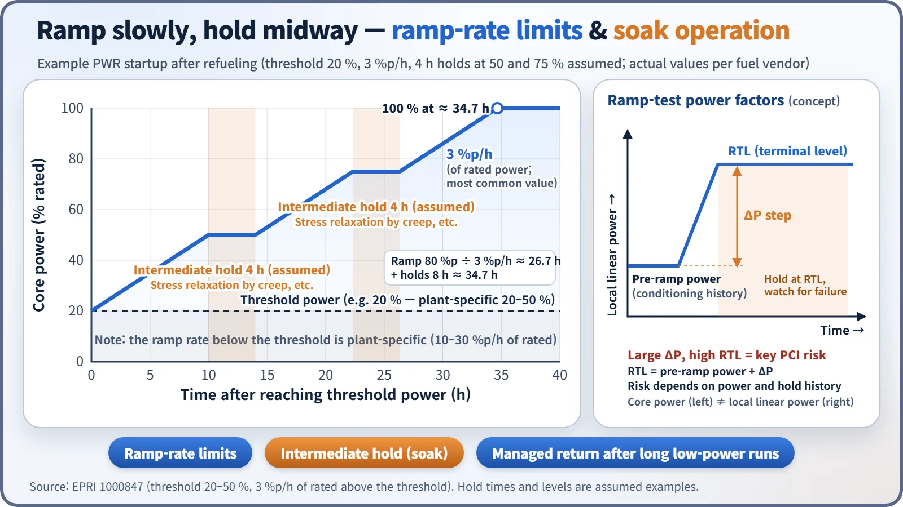
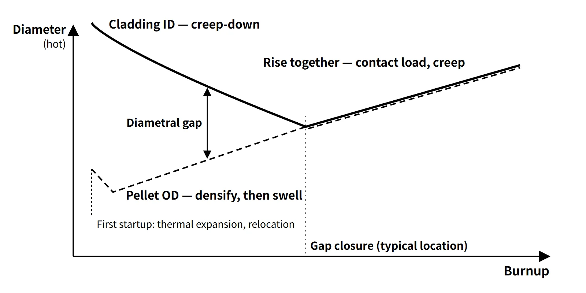

Fuel & Materials · C-FM-010
Pellet-Cladding Interaction (PCI) — Iodine Stress Corrosion Cracking When Power Rises After Gap Closure
Once the gap closes, a power increase plus iodine can crack the cladding from the inside at low strain.
Pellet-cladding interaction (PCI) is the phenomenon in which, once the pellet-cladding gap of a fuel rod has closed, a power increase makes the pellet's thermal expansion impose local tensile stress on the cladding while iodine and other corrosive fission products (FP) released from the pellet act at the same spot, so that stress corrosion cracking (SCC) starts at the cladding inner surface.
In the broad sense the term also covers failure by purely mechanical loading (PCMI, pellet-cladding mechanical interaction). The two are best kept separate. NRC SRP 4.2 puts it the same way: "PCI is generally caused by stress-corrosion cracking due to iodine, while PCMI is primarily a stress-driven failure, and the two are difficult to distinguish by appearance."
Principle and mechanism
Gap closure — the precondition for interaction
A fresh fuel rod has a diametral gap of about 0.17 mm (17×17 example), so the pellet cannot push on the cladding. The gap shrinks because of:
- Pellet side: thermal expansion at startup, relocation (crack fragments moving outward during the first power ascent) and swelling with burnup (about 0.091 %ΔV/(GWd/tU))
- Cladding side: creep-down, in which the cladding creeps inward under the compressive hoop stress produced because the coolant pressure (PWR 15.5 MPa) exceeds the rod internal pressure
- Opposite direction: early densification shrinks the pellet and temporarily widens the gap.
When these effects add up to close the hot gap depends on design and power history, and is taken to be roughly in the range of a few tens of GWd/tU. After closure the cladding is pushed outward together with the pellet (creep-out), and from then on every change in power is directly a change in cladding stress.
Hourglassing and bamboo ridging — where stress concentrates
- The temperature inside the pellet is parabolic, high at the centre and low at the surface. Because the centre expands more, the surface is put in hoop tension and radial cracks form.
- The pellet ends are less restrained axially, so they spread more radially. The pellet takes an hourglass shape with thicker ends.
- As a result the cladding develops circumferential ridges at every pellet-pellet interface height, so-called bamboo ridging. Stress concentrates at these heights and opposite the tips of the radial cracks.
- A missing pellet surface (MPS) defect causes local over-strain and can lead to failure even under small power changes.
Conditions for PCI-SCC
- Tensile stress above a threshold: the contact load as the pellet pushes on the cladding during a power increase (PCMI load)
- Corrosive environment: iodine released from the hot pellet during the power increase and supplied along the cracks (Cs and Cd are also mentioned)
- Susceptible material: Zr alloy
When the three conditions coincide, SCC can initiate and grow, and if they persist long enough for the crack to start and grow, it goes through the wall. Failed rods show short axial cracks starting at the inner surface with brittle pseudo-cleavage fracture surfaces. In some ramp tests, failure occurred within a few minutes to a few tens of minutes after the target power was reached. Unlike mechanical PCMI failure, PCI-SCC occurs without large deformation, even at low strain. Radial cracks must be viewed in the transverse section; the spot where stress and iodine coincide is the cladding opposite the opening of a crack at the pellet surface.
![Concept diagram of a gap-closed fuel rod: an axial section with hourglass-shaped UO2 pellets, bamboo ridges in the Zr-alloy cladding at the pellet interfaces, chamfered pellet ends and thermal expansion arrows; a transverse section A-A near the pellet end with radial cracks, iodine transport along a crack, hoop tensile stress and an inner-wall crack opposite the crack opening; a cutaway photo-style render of a rod; cards listing the PCI-SCC conditions (tensile stress, iodine environment, susceptible Zr alloy, plus time) and contrasting PCI-SCC failure at low strain with PCMI mechanical failure](../../assets/images/concepts/c-fm-010-pellet-cladding-interaction/fig1-pci-mechanism.webp)
What it means in a plant
When is it dangerous? Power history is the key
Whether a rod fails depends most strongly on the ramp terminal level (RTL), the linear power increase (ΔP) and the preceding power history. After long operation at constant power, cladding creep relaxes the stress and the rod becomes "conditioned" to that power. Power changes below that level are relatively free; only a new rise to a higher power creates new stress. Long operation at low power lowers the conditioning level (deconditioning), so the return to rated power is again restricted.
High-risk situations are startup after refueling, return after long low-power operation, local power increases from control rod movement, and load following. BWRs, where control rods move inside the core and cause frequent local ramps, suffered many PCI failures in the 1970s. CANDU fuel experiences ramps when on-power refueling moves bundles into high-power positions. Fresh fuel, whose gap is still open, is actually less vulnerable.
Design measures
- Barrier cladding: in BWRs, a pure Zr liner (about 75–100 μm, about 10 % of the wall thickness) is metallurgically bonded inside Zircaloy-2. The soft Zr relieves stress concentration and has low susceptibility to iodine SCC. It was introduced in the early 1980s; its limitation is that the liner has low corrosion resistance, so secondary hydriding becomes worse once it is penetrated.
- Doped pellets: adding Cr₂O₃ (or Cr₂O₃ + Al₂O₃) enlarges the grains and raises high-temperature creep. The pellet deforms itself, reducing cladding stress, and fission gas release also falls.
- Pellet geometry: end chamfers and dishes and a smaller length-to-diameter ratio reduce hourglassing.
- CANDU: graphite coating on the cladding inner surface (CANLUB)
- Manufacturing quality: inspection for pellet chips and MPS
Operation — ramp-rate limits and soak operation
- Ramp-rate limits: introduced by fuel vendors in the late 1970s. According to EPRI report 1000847, the threshold power for PWR startup after refueling is 20–50 % of rated core power depending on the plant (mostly about 20 %); the ramp rate below the threshold is 10–30 %/h, and above the threshold 3 %/h of rated power is the most common value. Raising power from a 20 % threshold to 100 % at 3 %p/h takes 80 ÷ 3 ≈ 26.7 hours, not counting holds. The same report also gives the interpretation that relaxing to a 50–60 % threshold and 5 %/h does not greatly increase the likelihood of PCI failure.
- Soak operation: holding at an intermediate power for a few hours to give cladding creep time to relax the stress. In ramp tests, the hold at the target power is also called a soak.
- BWR PCIOMR: GE's preconditioning operating recommendations, which limit the rate of linear power increase above the conditioned envelope. After barrier cladding was introduced, operation without these restrictions has been reported.
- Core monitoring: the core monitoring system tracks PCI margin and the axial power distribution.

When a PCI failure occurs, coolant iodine and fission gas activity rise.
Regulatory and design criteria
The criteria below are examples from the United States (US NRC).
| Basis | Key point |
|---|---|
| 10 CFR 50 App. A GDC 10 | SAFDLs must not be exceeded in normal operation and anticipated operational occurrences (AOOs) |
| NUREG-0800 SRP 4.2 Rev. 3 (2007) II.1.B.vi | No criterion currently exists for PCI or PCMI failure. Related criteria: ① cladding uniform strain ≤ 1 % ② no fuel melting. Neither is sufficient to prevent PCI |
| Same section | Vendors set design limits on power maneuvering and ramp rates; thermal expansion and gaseous swelling models are applied in AOO strain analysis |
| RG 1.236 (2020) | Defines the RIA PCMI failure threshold as a function of cladding excess hydrogen |
The "uniform strain" in the 1 % criterion is the elastic plus inelastic strain caused by a transient, counted without normal-operation creep-down and irradiation growth. The SRP states explicitly that this criterion does not prevent corrosion-assisted failures at low strain or local over-strain from pellet chips. PCI is therefore managed by vendor operating guidance and design improvements rather than by licensing criteria.
SRP 4.2 Rev. 3 (2007) set out this wording, and the RIA PCMI criterion was finalized in RG 1.236 in 2020. The commercialization of doped pellets and the growing demand for load following are further recent developments relevant to PCI.
Easily confused pairs
| PCI-SCC | PCMI | Cladding creep-down | Cladding collapse | |
|---|---|---|---|---|
| Load | Tensile stress + iodine | Contact load and strain (even without iodine SCC) | Compression from external pressure | External pressure |
| When | Power increase after gap closure | High-burnup RIA, large overpower | Normal operation before gap closure | Early life, axial gap (densification) |
| Strain | Even at low strain | Large | Normal creep | Local flattening |
| Time | Minutes to tens of minutes | Milliseconds to transient duration | Years | Long term |
| Countermeasure | Liner, doping, ramp-rate limits | Enthalpy limit, hydrogen control | Included in design (He pressurization) | He pressurization, stable pellets |
Key points at a glance
- Definition: SCC at the cladding inner surface from pellet expansion stress + iodine during a power increase in a gap-closed rod (PCI-SCC); purely mechanical failure is PCMI.
- Precondition: gap closure — thermal expansion, relocation and swelling (pellet) + creep-down (cladding).
- Stress concentration: hourglassing → bamboo ridges at pellet interfaces, radial crack tips, MPS.
- SCC conditions: tensile stress + iodine environment + susceptible Zr alloy; through-wall if sustained.
- Governing variables: ramp terminal level, size of the increase, power history (conditioning and deconditioning).
- Design measures: Zr-liner barrier cladding (BWR), Cr₂O₃-doped pellets, chamfers and dishes, CANLUB (CANDU), MPS inspection.
- Operating measures: ramp-rate limit of about 3 %/h above the threshold power (20–50 %), soak operation (intermediate holds), BWR PCIOMR, core monitoring.
- Regulation: GDC 10, SRP 4.2 — no PCI criterion; 1 % uniform strain and no fuel melting are insufficient.
- Soak operation: hold at constant power so cladding creep relaxes the stress → conditioning.
Reading the diameter sketch: the cladding shrinks by creep-down, then grows after gap closure as the pellet pushes it, and the outer oxide layer adds slightly to the outer diameter. The pellet grows at startup from thermal expansion and relocation, shrinks briefly from densification, and then grows again by swelling. Both lines are on a hot basis; the distance between them is the diametral gap.
